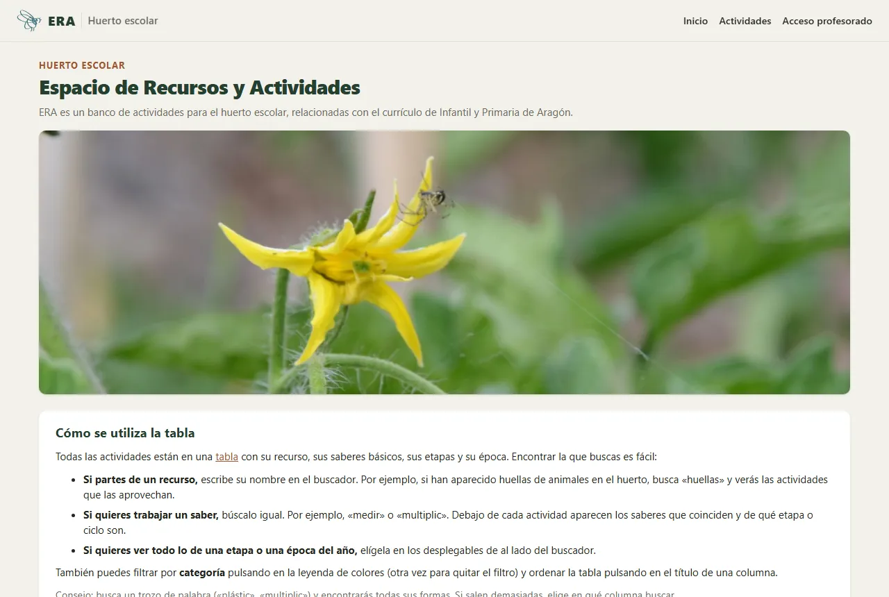
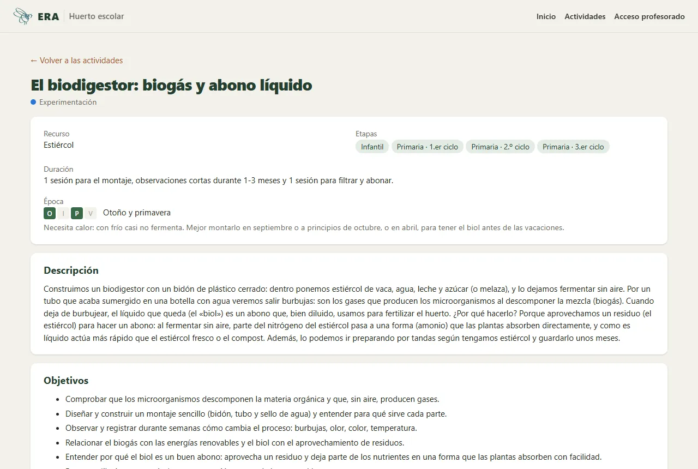

ERA: el aula en el huerto y el huerto en el aula
ERA (Espacio de Recursos y Actividades) es una web para que el profesorado encuentre, programe y comparta actividades para el huerto escolar, ligadas a los saberes básicos del currículo de Infantil y Primaria de Aragón.
Nació como recurso de una formación para los docentes del CEIP de Olba, realizada a través del Centro de Profesorado Ángel Sanz Briz de Teruel.



La formación
Una formación para el claustro del CEIP de Olba sobre cómo llevar el aula al huerto y el huerto al aula: aprovechar el huerto de la escuela para trabajar los saberes de todas las áreas, y no solo para sembrar y regar.
ERA recoge el material para que el profesorado lo tenga a mano, lo pueda ampliar y lo pueda compartir con otras escuelas.
Qué hay en ERA
-
Actividades ligadas al currículo
- Cada ficha con la descripción, los materiales, los pasos y las precauciones
- Para cada etapa, su adaptación y los saberes básicos del currículo de Aragón
- Búsqueda por recurso, por saber, por etapa o por época del año
-
Más que cultivar
- Experimentos: el biodigestor, las cromatografías de la tierra, el té de compost
- Tecnología: estación meteorológica y riego automático con micro:bit
- Naturaleza, cocina y tradición: plantas bioindicadoras, empanadillas de acelga, el refranero del huerto
-
Itinerarios
- La programación del huerto de una etapa en un calendario, para un mes, un trimestre o todo el curso
- Avisos de época y de etapa, y el equilibrio entre categorías y áreas
- Privados, o compartidos con el profesorado que elijas
-
Hecho entre todo el profesorado
- Cualquier docente con cuenta puede proponer actividades, con fotos y fichas para descargar
- Una persona revisora las aprueba antes de publicarlas
Libre y abierto
Las actividades se pueden usar, adaptar y compartir con la licencia CC BY-SA 4.0, y el código de la web es software libre (AGPL-3.0).
Hecha con HTML, CSS y JavaScript, sin dependencias, y con Firebase para los datos y las cuentas del profesorado.
Si quieres una formación como esta para tu escuela, o un banco de actividades para tu proyecto, hablemos.